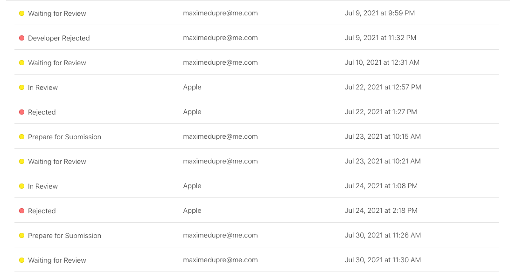
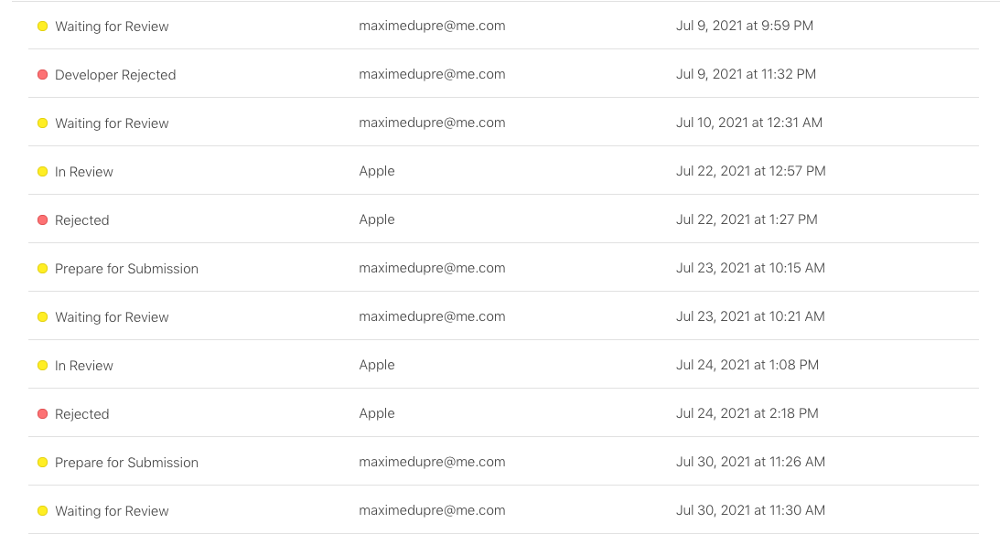

KissTodo official launch - The story 🚀
The story
KissTodo spawned from my dislike of the currently available task management systems.
If it wasn't for the fact that notes and tasks were mingled together in a giant unfocused mess, Notion and Evernote would almost be good enough. Certainly not ideal. Since they don't focus on todo management, they are not optimized to allow you to quickly and efficiently create tasks and navigate between them. Not for a programmer that is used to a quick and effective workflow with keyboard shortcuts, at least :D.
There are other single-focused task management systems out there like Todoist. If that's what you're using right now and you love it, then certainly keep using it and stop reading ^^! To my taste, it is too opinionated and inflexible. What if you want to create infinite sub-sections? It just won't let you organize your tasks how you really want them. Furthermore, navigation on the interface isn't nearly as easy as with KissTodo.
Since I had no interest in the current todo apps, I started using .txt files. Yes, .txt files! And I loved them. Simple, easy, efficient. But there were some missing key features. I needed easy nesting. Section toggling. Simple duplication of todos and the ability to move them around.
So I built KissTodo. I'm so happy with the app! It took a while to build. I went through multiple iterations. One version was built with Svelte. Another with React. This final one is built with Vue 3. If I could go back, I would probably choose Svelte Kit to build it though. But I'm very happy with the current result.
It was a long process. I stopped for a couple of months on one or two occasions. But now I'm ready to share my baby with the world :D. I hope some of you find it very useful. If not, no problem, I understand. Maybe this is only something I want. I'll for sure keep using it to plan and prioritize my whole life - personal to work and business.
Most programmers build a todo app as their first app. Therefore, most todo apps aren't very useful, because they don't solve any particular problem. I believe KissTodo improves upon all the great personal task management tools out there and is the best current option.
Oh, and KissTodo stands for "Keep It Simple, Stupid", a very popular saying amongst programmers describing the fact that simple is oftentimes much better than complex. As you will see if you decide to try it out, KissTodo is very easy and fun to use!
Lessons learned/challenges
Going through different front end frameworks
As I said, the first version of KissTodo was with Svelte/Sapper. Looking back, this was the best stack for me.
The reason I switched to React was that I thought Svelte wasn't mature enough to support complex data structures. Specifically nested data structures. KissTodo data structure has a lot of nesting since you can nest todos infinitely. Svelte stores dealt with such structures very poorly. While it's true that Svelte is having some problems with this kind of data structure, it's also a bad practice to organize your objects in this way. My data structure is now flat, with todos referencing their parents. With this new data structure, building my app with Svelte would have been great, which is why if I had the chance, I would go with Svelte + flat data structures.
The reason I switched from React to Vue is that I thought that React sucked lol. Honestly, JSX just seems like the most horrible invention that the JS ecosystem has promoted lol.
Then I went with Vue. Coming from a heavy Angular background, I was missing all that magic that happens in the background LOL. Contrary to Svelte, Angular can handle crazy structures with no problem with its change detection mechanism. Sure, it might not be optimal and let you do dumb stuff, but it won't complain about anything.
At first, I didn't really like Vue. Now, I'm still not in love with it, but I've gotten used to it. I like the SFC (Single File Components).
Getting the app accepted on the mac app store 🤦🏻♂️
This was hard to do because the app is created with Electron and is based on the website. The app got rejected multiple times and took multiple months to get accepted. They complained that the browser experience wasn't sufficiently different than the desktop experience. I guess it was a valid complaint since my app was mostly a wrapper of the website in the beginning.
The history of my reviews 🤦🏻♂️🤦🏻♂️🤦🏻♂️
 


Over all those iterations, I had to add multiple features, such as Dark Mode, custom menu bar menus and icons, preference panel window, modified the content when the website is served through electron, etc.
I also learned that it pays off to submit a dispute when the app gets rejected if you genuienly believe your app should be accepted. I disputed my last two rejections and it paid off since it got finally accepted! I basically told them that I kept adding native features to the desktop app and that there were no clear boundaries as to when enough native features would be enough.
Adding payment with Stripe
One of my goals was to make my first $ in revenue in 100 days. This meant I had to implement a payment page on my app. This has been done, but I don't have a feature to make people pay 😅. The app is free right now, but I intend to have a Pro membership soon after launch with additional features.
This was pretty complex to do. I did everything manually, meaning that I called the API and had to understand all the different objects that relate to the subscription model, instead of using their ready-made "Checkout" solution. Looking back, I maybe should have used that instead of spending so much time understanding all the Stripe architecture. The good thing now is that I have a custom payment page that looks more integrated with the rest of my app.
This is also where I stopped automated tests...
Testing
All my tests are e2e with Cypress. Over the years, I have come to a personal understanding that this is the best type of testing. I know most people would disagree with me. But I'm not a fan of integration testing, or even unit testing (except for some really rare hardcore critical functions). Cypress is such a great tool with all the request interception mechanisms.
But testing the payment page is too much of a hassle. It has so many uses cases to test that it would have taken me too long to build.
My approach now is to test only when :
- I feel like I'm breaking stuff every time I make a change. Those are the things that truly need proper testing.
- I discover a bug in production
I like this approach. It makes me ship faster and then makes sure bugs never occur twice.
Landing/home page and making a launch
This is the newest part for me. I've never launched anything. I'm not much of a marketing guy. But I now know it's as important as the product itself.
Recently I started being much more active on Twitter to promote myself and my stuff. I've become much more interested in the Indie Hacker movement/culture. All of this is so interesting to me. Building an app and living from it is definitely the dream. I'll keep up the hard work until I can achieve this 💪.
So I had to design an enticing home/landing page, which is a first for me. I enjoyed using the Excalidraw tool and came up with mockups like the following.

With this journey, I'm learning more and more the importance of putting yourself and your work out there. It gives a chance for people to interact with your work.
Consistency - Self-discipline
This is the most important character trait one can have. It's a core pillar of my life. You need to work diligently and consistently on your projects. You need to constantly make the hard choices, whether you want to or not. Just. Keep. Going.
Let's go 💪
What's next?
Writing this blog post made me realize how proud I am of this product. I truly believe it is a good product and am so excited to see people using it. Even having 1 user would be amazing 🤩.
Just put yourself out there, ship things, get feedback and iterate.
App store listing
The current app store listing is pretty horrible. I'd like to add a better description and obviously some better graphics.
Pro features
Obviously, I intend to monetize KissTodo at some point. I will always offer a Free product and a Pro membership. Right now I got the payment plan in place, just no features 😆. Actually, that's not true, I plan on making the offline capability only for Pro users. We'll see.
Conflicts resolution
KissTodo allows you to have the app on multiple devices. When one of your devices makes some changes (e.g. added or deleted a todo), if the other device does not refresh the page, it still has the old dataset. Now, what if it makes a change with the old data? The todos are now out of sync.
I currently do handle those use cases with ETags. If the second device makes a modification with the outdated data, it will fetch the new data, undo the changes and tell the user to make the changes once again.
I'd like to offer some sort of conflicts resolution a la Git, with a very cool npm package I found.
Other features?
Maybe I should support more platforms natively instead of PWA? I'm not sure, I will wait a bit and see what is the user feedback if any (fingers crossed)! I can't wait to get some active users. I currently have one user. Not sure how active, and not sure if she is really interested in the platform or was just doing it to make me happy (😅) but I'm so grateful 🙏.
Let's go!
Thanks for reading 🙏
💋 KissTodo.com 💋
Want to leave a comment?
Join the discussion at Twitter. Feel free to drop me an email. 💌